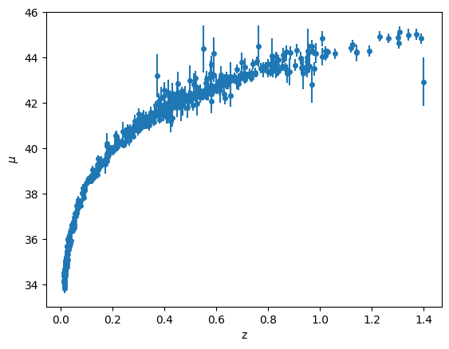
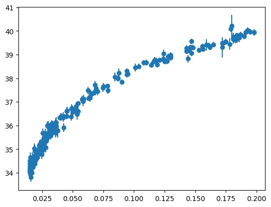
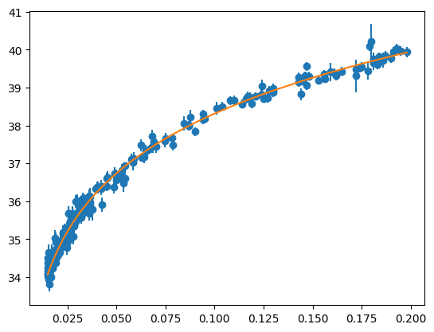

Application: Estimating \(H_0\) from Type Ia Supernovae#
Type Ia supernova are used as standardizable candles to measure cosmological distances. By observing the lightcurve and measuring how long it takes for the supernova to dim we can empirically determine its brightness via the Phillips relation.
The paper Spectra and Hubble Space Telescope Light Curves of Six Type Ia Supernovae at 0.511 < z < 1.12 and the Union2 Compilation by Amanullah et al. made a data set available that has ~ 500 Type Ia supernovae.
Note: that paper does a far, far more sophisticated analysis than we do, and they fit for other cosmological parameters that we will, so we will not get the same answer as they do. But this is a fun dataset to try out regression with. Later we will explore fitting to this data in an alternate way.
import numpy as np
import matplotlib.pyplot as plt
The dataset has 4 columns:
supernova identifier
redshift, \(z\)
distance modulus, \(\mu\)
uncertainty in \(\mu\)
data = np.genfromtxt("SCPUnion2_mu_vs_z.txt",
dtype=[("name", "S6"), ("z", "f8"), ("mu", "f8"), ("dmu", "f8")])
let’s sort the data based on z
idx_sort = np.argsort(data["z"])
zs = data["z"][idx_sort]
mus = data["mu"][idx_sort]
dmus = data["dmu"][idx_sort]
Now let’s plot the distance modulus vs redshift
fig, ax = plt.subplots()
ax.errorbar(data["z"], data["mu"], yerr=data["dmu"], fmt="o", ms=4)
ax.set_xlabel("z")
ax.set_ylabel(r"$\mu$")
Text(0, 0.5, '$\\mu$')

This looks like the top curve of Figure 9.
The basic idea is that we have the distance modulus, which is related to the magnitudes via:
Since cosmologists usually work in terms of Mpc, let’s rewrite this as:
Now, in an expanding Universe, the distance that goes here is the luminosity distance which can be expressed via an expansion in redshift as (for \(z \ll 1\)):
Here \(H_0\) is the Hubble constant and \(q_0\) is the deceleration parameter.
We’ll try to estimate \(H_0\) from this data. We note that this is different than what the original paper did—they used a value of \(H_0\) to find a \(\Omega_m\) and \(\Omega_\Lambda\) using the more general expression for luminosity distance given in Perlmutter et al. 1997 (see footnote 14).
We want to fit:
which we’ll write as:
This is a nonlinear expression in terms of the fit parameters, \(a_0\), \(a_1\). Once we get \(a_0\), we can get Hubble’s constant as:
First we need to select only the low redshift data, where our expansion of distance luminosity might apply:
zmax = 0.2
idx = zs < zmax
z_low = zs[idx]
mu_low = mus[idx]
dmu_low = dmus[idx]
fig, ax = plt.subplots()
ax.errorbar(z_low, mu_low, yerr=dmu_low, fmt="o")
<ErrorbarContainer object of 3 artists>

We’ll use the SciPy fitting routine for this. Let’s start by writing the residual that will be fit to:
from scipy import optimize
def resid(avec, z, mu, dmu):
return (mu - (5 * np.log10(avec[0] * z * (1 + 0.5 * (1 - avec[1]) * z)) + 25)) / dmu
Now let’s start with some initial guesses
# imagine H0 = 50
c = 3.e5 # km/s
H0_guess = 50 # km/s/Mpc
a0 = c / H0_guess
a1 = 1
afit, flag = optimize.leastsq(resid, [a0, a1], args=(z_low, mu_low, dmu_low))
afit
array([ 4.30725417e+03, -3.38758270e-01])
From this fit, we can recover the Hubble constant:
H0 = c / afit[0]
H0
69.64994130250743
Finally, let’s plot our fit
mu_fit = 5 * np.log10(afit[0] * z_low * (1 + 0.5 * (1 - afit[1]) * z_low)) + 25
ax.plot(z_low, mu_fit, zorder=100)
fig

Implementing our own fit#
If we wanted to implement the non-linear fit ourselves, we’d need the derivatives and the Hessian.
Starting with:
Let’s use SymPy to get the derivatives
from sympy import init_session
init_session(use_latex="mathjax")
IPython console for SymPy 1.12 (Python 3.10.13-64-bit) (ground types: python)
These commands were executed:
>>> from sympy import *
>>> x, y, z, t = symbols('x y z t')
>>> k, m, n = symbols('k m n', integer=True)
>>> f, g, h = symbols('f g h', cls=Function)
>>> init_printing()
Documentation can be found at https://docs.sympy.org/1.12/
a0, a1 = symbols("a_0 a_1")
mui, z, dmui = symbols("\mu_i z \Delta{}\mu_i")
c2 = (mui - 5 * log(a0 * z * (1 + Rational(1, 2) * (1 - a1) * z), 10) - 25)**2 / dmui**2
c2
First the functions \({\bf g}\)
g0 = c2.diff(a0)
simplify(g0)
g1 = c2.diff(a1)
simplify(g1)
Now the Hessian terms
simplify(g0.diff(a0))
simplify(g0.diff(a1))
simplify(g1.diff(a1))